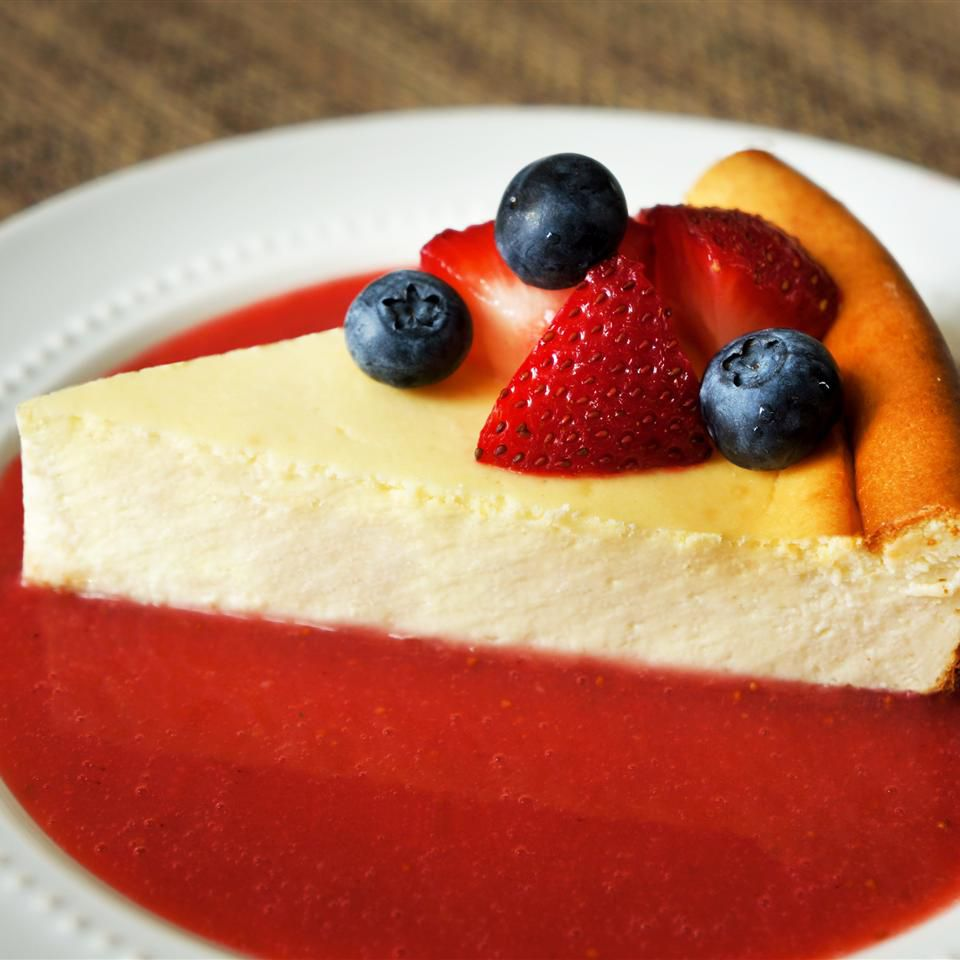

New York-Style Cheesecake

Description
This New York cheesecake is dense and rich. It includes a great technique for letting the cheesecake finish in the oven so that no cracks form as the cake cools.
Ingredients
- 18 Crushed Graham Crackers
- 3 Tablespoons Melted Butter
- 1 Cup Sour Cream
- 1/4 Cup Flour
- 1 Tablespoon Vanilla
- 1 1/2 Cups White Sugar
- 32 Ounces Cream Cheese
- 2/3 Cup Milk
- 4 Large Eggs
- 1 Teaspoon Lemon Zest
- 1 Teaspoon Orange Zest
Steps
- Mix graham cracker crumbs and melted butter together in a bowl until evenly moistened. Press crumb mixture into the bottom and about 1/2 inch up the sides of the springform pan.
- Whisk sour cream, flour, and vanilla extract together in a bowl
- Stir cream cheese and sugar together with a wooden spoon in a separate bowl until evenly incorporated, 3 to 5 minutes; add milk and whisk until just combined.
Whisk in eggs, one at a time, stirring well after each addition.
Stir in lemon zest, orange zest, and sour cream mixture; whisk until just incorporated.
Pour mixture into prepared springform pan.
- Bake in the preheated oven until the edges have nicely puffed and the surface of the cheesecake is firm except for a small spot in the center that will jiggle when the pan is gently shaken, about 1 hour.
- When the cheesecake is done, turn off the oven and let it cool in the oven for 3 to 4 hours. This prevents any cracks from forming on the top of the cheesecake.